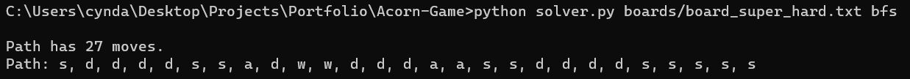
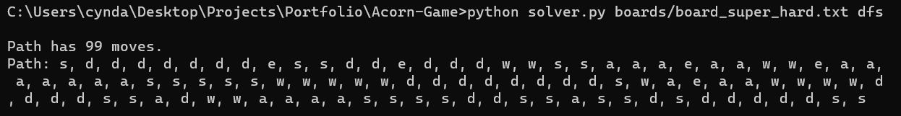

ACORN GAME

In Acorn Game, the player must guide an acorn through various mazes and obstacles to reach a finish point. The project is a small text based game run in the command line, and includes a way to play the game on various games boards parsed in from text file, as well as a solver algorithm that can perform a breadth-first or depth-first search on a given board. Acorn Game challenges the player through obstacles of walls, fire, and teleporters, whilst also testing their problem solving skills via tracking the amount of steps they took to reach the goal.
Features
- Game
- > runs in the command line
- > user input via text
- Board parser
- > checks validity of text file and translates to game board object
- > users can make own board (specifications found in repo)
- Board solver
- > breadth-first search algorithm (returns solution with least moves) 
- > depth-first search algorithm 
Work-In-Progress
As of this moment in time, this project is being adjusted to run within a web browser so that it can be played online, with no downloads or setup required. If you’re keen to play the game now, please refer to the instructions in the GitHub repository.